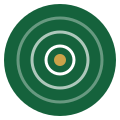
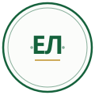

Логотип — 10 концептов
Все варианты в фирменной палитре сайта: тёмно-зелёный #15623C, основной зелёный #1E7F4F, золотистый акцент #C9A24A.
Каждый показан в трёх вариантах фона (светлый / тёмный / брендовый) и в двух размерах — крупно (как в hero / на визитке) и 40 px (как в шапке сайта, рядом с именем).
1. Монограмма «ЕЛ» в круге
Минималистичный знак: тонкая золотая окантовка и золотая линия-подложка под буквами. Развитие текущего лого, универсален, читается в favicon. Низкий риск, но мало рассказывает о профессии.
На светлом
На тёмном
На брендовом
2. Воронка продаж
Графический знак — стилизованная воронка с точкой-«закрытой сделкой» внизу. Сразу считывается профессия, хорошо работает иконкой в соцсетях. Без типографики имени — менее узнаваем.
На светлом
На тёмном
На брендовом
3. Монограмма + стрелка роста
Квадратный знак: «ЕЛ» с золотой стрелкой по диагонали — метафора роста выручки и команды. Двойное считывание (инициалы + рост), эффектный цветовой акцент.
На светлом
На тёмном
На брендовом
4. Галочка-сделка
Лаконичный знак — большая белая галочка на зелёном круге, с золотым «огоньком» на кончике. Символ закрытой сделки и завершённой работы. Максимально узнаваем в маленьком размере (favicon, аватарка).
На светлом
На тёмном
На брендовом
Плюсы
- Максимально узнаваем и считывается
- Прекрасно работает иконкой в любом размере
- Положительная коннотация — «успех», «готово»
Минусы
- Галочка — самый «затёртый» символ в бизнесе
- Может ассоциироваться с todo-апами / чекерами, а не с продажами
5. Вершина / восхождение
Стилизованные горы с золотой вершиной — метафора пути «от продавца до руководителя ОП», личного и командного роста. Визуально благороден, ассоциируется с амбициями и достижением.
На светлом
На тёмном
На брендовом
Плюсы
- Эмоциональная метафора (амбиция, путь)
- Отличается от типовых «корпоративных» лого
- Хорошо в брендинге книги / курса, если будут
Минусы
- Прямо не намекает на продажи — горы у мотивационных коучей и стартапов тоже
- Сложнее в маленьком размере (детали вершины могут теряться)
6. Мишень / попадание в цель
Три концентрических круга с золотым центром — «попадание в десятку». Метафора результата, точности, KPI. Простой, мощный, читается на любых размерах.
На светлом

На тёмном
На брендовом
Плюсы
- Симметричный, идеально вписывается в любую сетку
- Универсальная метафора результата и KPI
- Геометрически безупречен — выглядит «премиально»
Минусы
- Чаще ассоциируется с маркетингом / таргетингом
- Концептуально немного «попсово»
7. Растущие столбики
Четыре столбика, нарастающих в высоту, с золотым «рекордным» — наглядная метафора роста выручки. Конкретно, по-делу, говорит языком цифр.
На светлом
На тёмном
На брендовом
Плюсы
- Прямая визуальная связь с ростом продаж и метриками
- Узнаваемо в маленьком размере
- Соответствует обещанию «×3 оборота», «×4 базы» с сайта
Минусы
- Похоже на лого аналитических сервисов / финтеха
- Менее эмоциональное, более «дашбордное»
8. Стрелки навстречу (переговоры)
Две встречные стрелки, сходящиеся в одной точке — метафора переговоров и сделки между сторонами. Учитывая, что у Егора MBA по переговорам, это самая «личная» метафора.
На светлом
На тёмном
На брендовом
Плюсы
- Связан с переговорами — ключевая компетенция Егора
- Игра двух цветов (белый + золотой) на брендовом фоне
- Считывается как «win-win»
Минусы
- Стрелки навстречу — частый символ в B2B
- В очень маленьком размере (16 px) две стрелки могут «слиться»
9. Экспертная печать
Знак в виде сертификационной печати: круговая надпись «ЕГОР ЛУКШО · ТРЕНЕР ПО ПРОДАЖАМ» вокруг монограммы «ЕЛ». Подчёркивает экспертный статус, ассоциируется с дипломами.
На светлом

На тёмном
На брендовом
Плюсы
- Ощущение «сертифицированного эксперта»
- Самодостаточен — содержит имя и специализацию
- Хорошо на печатной продукции, документах, презентациях
Минусы
- Не работает в favicon — мелкий текст превращается в шум
- Стилистика «печати» может казаться старомодной
- Тёмные фоны требуют инверс-версии
10. Wordmark «ЕЛ.»
Чистый типографический логотип: жирные «ЕЛ» с золотой точкой. Без иконок и графики — европейский подход в духе модных брендов. Уверенный, лаконичный.
На светлом
На тёмном
На брендовом
Плюсы
- Максимально лаконичный и «европейский»
- Без графики — невозможно случайно повторить
- Подходит для премиум-позиционирования
Минусы
- На favicon будет просто «ЕЛ»
- Без поясняющей графики не намекает на продажи
- Нужны явные инверс-варианты для тёмных фонов
После выбора одного варианта (или гибрида) — заменим текстовый «ЕЛ» в шапке сайта и сгенерируем favicon-набор (16, 32, 180, 512 px).